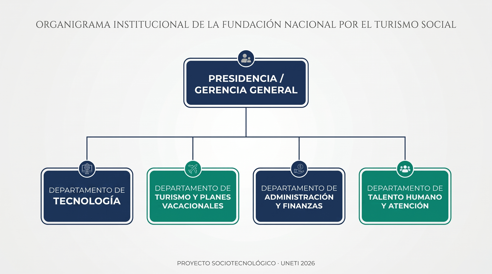
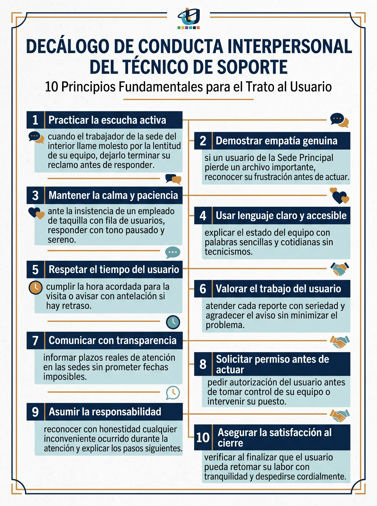

Fundación Nacional por el Turismo Social en Venezuela
"Recreación accesible que conecta regiones y fortalece nuestra gente."
🏛️ La Institución
Organismo público dedicado a planes vacacionales y recreacionales para estudiantes y trabajadores en 4 sedes nacionales
🔍 Situación y Competencias
Diagnóstico de 40 estaciones de trabajo, propuesta de mesa de ayuda GLPI y matriz de habilidades técnicas y blandas
🛠️ Gestión del Servicio TI
Clasificación de incidentes y problemas, acuerdos de nivel de servicio (SLA), indicadores de continuidad y marco teórico ITIL 4 / COBIT / ISO.
🏛️ Identidad Institucional de la Fundación
Misión
Promover, planificar y ejecutar planes vacacionales y recreacionales accesibles y de calidad para estudiantes de educación básica y universitaria, así como para trabajadores y trabajadoras de organismos públicos en Venezuela, impulsando el turismo interno y el aprovechamiento sostenible de los recursos y servicios de cada región.
Visión
Consolidarse como la institución referente en turismo social en Venezuela, reconocida por su cobertura nacional, eficiencia operativa y respaldo tecnológico moderno, garantizando experiencias recreativas inclusivas que impulsen el bienestar social y el desarrollo turístico regional.
Valores Institucionales
- Inclusión y equidad.
- Compromiso y servicio.
- Transparencia y responsabilidad.
- Integración regional.
- Innovación y mejora continua.
📍 Sede Principal y Sucursales
- Sede Principal: Caracas, Distrito Capital (Av. Principal Los Chaguaramos, Edificio Centro Institucional Sol) 18 Equipos
- Sucursal 1: Región Oriental / Barcelona, Estado Anzoátegui (Av. Intercomunal, Centro Empresarial Oriente, Local 12) 8 Equipos
- Sucursal 2: Región Centro-Occidental / Barquisimeto, Estado Lara (Av. Los Leones, Torre Empresarial Crepuscular, Piso 3) 7 Equipos
- Sucursal 3: Región Sur / Los Llanos / Calabozo, Estado Guárico (Av. Octavio Viana, Edificio Comercial El Llano, Planta Baja) 7 Equipos
🗂️ Organigrama Institucional

🔍 Diagnóstico Tecnológico Actual (40 Equipos)
Software de Atención de Fallas
Situación actual: Inexistente; las solicitudes se reciben por llamadas telefónicas sin registro ni trazabilidad.
Propuesta: Implementación de GLPI (software libre) para mesa de ayuda, tickets e inventario.
Esquema de Atención al Usuario
- 1) Recepción y registro en GLPI
- 2) Clasificación por impacto/urgencia.
- 3) Atención Nivel 1 (Técnico: remoto/presencial).
- 4) Escalamiento Nivel 2 (Ing. Sistemas).
- 5) Cierre y encuesta de conformidad.
Cumplimiento de Normas de Atención
Aplicación de trato empático (cero culpas), comunicación en lenguaje claro sin tecnicismos, prohibición de instalaciones sin autorización y acta obligatoria de traslado de equipos.
| Código | Sede / Ubicación Exacta | Departamento / Puesto | Marca y Modelo | Procesador | RAM / Disco | Sistema Operativo | Estado y Diagnóstico Técnico |
|---|---|---|---|---|---|---|---|
| EQ-01 | Sede Principal · Piso 1 | Contratación de Planes (Puesto 1) | Dell OptiPlex 790 | Intel Core i3-2120 | 2 GB DDR3 / HDD 250 GB | Windows 7 Pro | Obsoleto / Crítico Congelamientos frecuentes al abrir planillas de reservas. |
| EQ-02 | Sede Principal · Piso 1 | Contratación de Planes (Puesto 2) | Dell OptiPlex 790 | Intel Core i3-2120 | 2 GB DDR3 / HDD 250 GB | Windows 7 Pro | Obsoleto / Crítico Lentitud extrema en arranque y cierre inesperado de navegadores. |
| EQ-03 | Sede Principal · Piso 1 | Contratación de Planes (Puesto 3) | HP Compaq 6200 Pro | Intel Pentium G630 | 4 GB DDR3 / HDD 320 GB | Windows 10 Pro | Obsoleto / Crítico Disco duro con sectores lentos; tarda más de 10 min en iniciar. |
| EQ-04 | Sede Principal · Piso 1 | Contratación de Planes (Puesto 4) | Lenovo ThinkCentre M72e | Intel Core i3-3220 | 4 GB DDR3 / HDD 500 GB | Windows 10 Pro | Obsoleto / Crítico Sobrecalentamiento por falta de mantenimiento preventivo. |
| EQ-05 | Sede Principal · Piso 1 | Contratación de Planes (Puesto 5) | Dell OptiPlex 3020 | Intel Core i3-4130 | 4 GB DDR3 / HDD 500 GB | Windows 10 Pro | Obsoleto / Crítico Error de actualización instalada por el usuario sin permiso. |
| EQ-06 | Sede Principal · Piso 1 | Coordinación de Planes Vacacionales | HP Compaq 6200 Pro | Intel Core i3-2100 | 4 GB DDR3 / HDD 320 GB | Windows 7 Pro | Obsoleto / Crítico Incompatibilidad con certificados web actuales y lentitud general. |
| EQ-07 | Sede Principal · Piso 1 | Administración y Finanzas (Contabilidad 1) | Lenovo ThinkCentre M73 | Intel Core i5-4570 | 8 GB DDR3 / HDD 500 GB | Windows 10 Pro | Operativo con fallas Programas externos instalados sin autorización causan errores. |
| EQ-08 | Sede Principal · Piso 1 | Administración y Finanzas (Contabilidad 2) | HP Compaq 8200 Elite | Intel Core i5-2400 | 4 GB DDR3 / HDD 500 GB | Windows 10 Pro | Operativo con fallas Conflictos de controladores de impresora fiscal/red. |
| EQ-09 | Sede Principal · Piso 1 | Administración y Finanzas (Tesorería) | Lenovo IdeaCentre AIO A340 | Intel Core i3-8145U | 8 GB DDR4 / HDD 1 TB | Windows 10 Home | Operativo Desempeño aceptable; requiere perfil de usuario sin permisos admin. |
| EQ-10 | Sede Principal · Piso 1 | Administración y Finanzas (Presupuesto) | Dell OptiPlex 3040 | Intel Core i5-6500 | 8 GB DDR3L / HDD 500 GB | Windows 10 Pro | Operativo con fallas Archivo de nómina local sin respaldo automático en red. |
| EQ-11 | Sede Principal · Piso 1 | Compras y Logística Turística | Lenovo ThinkCentre M73 | Intel Core i3-4150 | 4 GB DDR3 / HDD 500 GB | Windows 10 Pro | Operativo con fallas Lentitud moderada por falta de limpieza de archivos temporales. |
| EQ-12 | Sede Principal · Piso 1 | Archivo y Control Administrativo | HP Compaq 8200 Elite | Intel Core i3-2120 | 4 GB DDR3 / HDD 250 GB | Windows 7 Pro | Obsoleto Sin soporte de actualizaciones de seguridad; uso básico de oficina. |
| EQ-13 | Sede Principal · Planta Baja | Presidencia / Gerencia General | Dell OptiPlex 5040 | Intel Core i5-6500 | 8 GB DDR4 / SSD 256 GB | Windows 10 Pro | Operativo Buen rendimiento; requiere actualización de inventario en GLPI. |
| EQ-14 | Sede Principal · Planta Baja | Asistencia de Presidencia | Lenovo ThinkPad T470 | Intel Core i5-7200U | 8 GB DDR4 / SSD 256 GB | Windows 10 Pro | Operativo Equipo portátil funcional; batería con desgaste moderado. |
| EQ-15 | Sede Principal · Planta Baja | Atención al Público (Taquilla 1) | Dell OptiPlex 3050 | Intel Core i5-7500 | 8 GB DDR4 / SSD 240 GB | Windows 10 Pro | Operativo con fallas Intermitencia en el cable de red estructurado del puesto. |
| EQ-16 | Sede Principal · Planta Baja | Atención al Público (Taquilla 2) | HP ProBook 450 G4 | Intel Core i5-7200U | 8 GB DDR4 / HDD 500 GB | Windows 10 Pro | Operativo Funcional; requiere configuración de agente de soporte remoto. |
| EQ-17 | Sede Principal · Planta Baja | Departamento de Tecnología (Ing. Sistemas) | Dell OptiPlex 5040 | Intel Core i5-6500 | 8 GB DDR4 / SSD 256 GB | Windows 10 / Linux | Operativo Estación principal de administración de red y servidor local GLPI. |
| EQ-18 | Sede Principal · Planta Baja | Departamento de Tecnología (Técnico TI) | Dell OptiPlex 3050 | Intel Core i5-7500 | 8 GB DDR4 / SSD 240 GB | Windows 10 Pro | Operativo Estación de diagnóstico, maquetación y soporte remoto a sucursales. |
| EQ-19 | Sucursal 1 · Anzoátegui | Coordinación Regional Aragua | Dell OptiPlex 390 | Intel Core i3-2120 | 4 GB DDR3 / HDD 500 GB | Windows 10 Pro | Crítico / Sin registro Trasladado durante cuarentena sin acta de asignación. |
| EQ-20 | Sucursal 1 · Anzoátegui | Atención a Organismos Públicos 1 | HP Compaq 6000 Pro | Intel Core 2 Duo E8400 | 2 GB DDR3 / HDD 160 GB | Windows 7 Pro | Obsoleto / Crítico Pantallas azules recurrentes; detiene la carga de solicitudes. |
| EQ-21 | Sucursal 1 · Anzoátegui | Atención a Organismos Públicos 2 | HP Compaq 6000 Pro | Intel Core 2 Duo E8400 | 2 GB DDR3 / HDD 160 GB | Windows 7 Pro | Obsoleto / Crítico Falla de memoria y fuente; sin capacidad para multitarea. |
| EQ-22 | Sucursal 1 · Anzoátegui | Gestión de Planes Estudiantiles 1 | Dell OptiPlex 780 | Intel Core 2 Duo E7500 | 4 GB DDR3 / HDD 250 GB | Windows 7 Pro | Obsoleto / Crítico Equipo reubicado sin notificación a TI; sin conexión a impresora. |
| EQ-23 | Sucursal 1 · Anzoátegui | Gestión de Planes Estudiantiles 2 | Lenovo ThinkCentre M71e | Intel Core i3-2120 | 4 GB DDR3 / HDD 320 GB | Windows 10 Pro | Operativo con fallas Actualización forzada por el usuario dañó el controlador de red. |
| EQ-24 | Sucursal 1 · Anzoátegui | Administración Regional Aragua | Dell OptiPlex 3020 | Intel Core i3-4130 | 4 GB DDR3 / HDD 500 GB | Windows 10 Pro | Operativo con fallas Lentitud por falta de mantenimiento preventivo y antivirus vencido. |
| EQ-25 | Sucursal 1 · Anzoátegui | Logística de Rutas Turísticas | HP Pavilion g4 | Intel Core i3-2350M | 4 GB DDR3 / HDD 500 GB | Windows 10 Home | Crítico / Sin registro Portátil llevado a casa en cuarentena; devuelto con fallas de SO. |
| EQ-26 | Sucursal 1 · Anzoátegui | Recepción y Archivo Regional | Lenovo ThinkCentre M71e | Intel Pentium G620 | 2 GB DDR3 / HDD 250 GB | Windows 7 Pro | Obsoleto / Crítico Reinicios aleatorios; requiere reemplazo urgente con convenio. |
| EQ-27 | Sucursal 2 · Lara | Coordinación Regional Carabobo | Dell OptiPlex 7010 | Intel Core i5-3470 | 8 GB DDR3 / SSD 240 GB | Windows 10 Pro | Operativo Equipo funcional; usado como enlace de soporte remoto en la sede. |
| EQ-28 | Sucursal 2 · Lara | Contratación Turística Carabobo 1 | Dell OptiPlex 3020 | Intel Core i3-4130 | 4 GB DDR3 / HDD 500 GB | Windows 10 Pro | Operativo con fallas Usuario instaló software no autorizado provocando lentitud. |
| EQ-29 | Sucursal 2 · Lara | Contratación Turística Carabobo 2 | HP ProDesk 400 G2 | Intel Core i3-4160 | 4 GB DDR3 / HDD 500 GB | Windows 10 Pro | Operativo con fallas Fallo en actualización de Windows dejó el sistema inestable. |
| EQ-30 | Sucursal 2 · Lara | Atención a Convenios Educativos | HP Compaq 6300 Pro | Intel Core i3-3220 | 4 GB DDR3 / HDD 320 GB | Windows 10 Pro | Operativo con fallas Desconexiones intermitentes de red local (tarjeta Ethernet). |
| EQ-31 | Sucursal 2 · Lara | Administración Regional Carabobo | Lenovo ThinkCentre M73 | Intel Core i5-4570 | 8 GB DDR3 / HDD 500 GB | Windows 10 Pro | Operativo Rendimiento estable; pendiente estandarización de perfil sin admin. |
| EQ-32 | Sucursal 2 · Lara | Promoción y Atención al Usuario | Dell Latitude E5450 | Intel Core i5-5300U | 8 GB DDR3L / SSD 256 GB | Windows 10 Pro | Operativo Portátil funcional; trasladado de oficina sin actualizar inventario. |
| EQ-33 | Sucursal 2 · Lara | Operaciones y Transporte Turístico | HP Compaq 6300 Pro | Intel Pentium G2020 | 4 GB DDR3 / HDD 250 GB | Windows 7 Pro | Obsoleto Bajo rendimiento para hojas de cálculo y sistemas web actuales. |
| EQ-34 | Sucursal 3 · Guárico | Coordinación Regional Yaracuy | Dell OptiPlex 980 | Intel Core i5-650 | 4 GB DDR3 / HDD 320 GB | Windows 10 Pro | Obsoleto / Paradas Fuente de poder deficiente provoca apagones repentinos. |
| EQ-35 | Sucursal 3 · Guárico | Atención al Público Yaracuy 1 | Dell OptiPlex 790 | Intel Core i3-2120 | 2 GB DDR3 / HDD 250 GB | Windows 7 Pro | Obsoleto / Crítico Congelamiento total al procesar múltiples registros vacacionales. |
| EQ-36 | Sucursal 3 · Guárico | Atención al Público Yaracuy 2 | HP Compaq 6005 Pro | AMD Athlon II X2 B24 | 2 GB DDR3 / HDD 160 GB | Windows 7 Pro | Obsoleto / Crítico Equipo inoperativo por fallo de disco duro; paraliza el puesto. |
| EQ-37 | Sucursal 3 · Guárico | Gestión de Planes Comunitarios | Dell OptiPlex 390 | Intel Core i3-2100 | 4 GB DDR3 / HDD 320 GB | Windows 10 Pro | Crítico / Sin registro Movido desde otra área en cuarentena sin control de TI. |
| EQ-38 | Sucursal 3 · Guárico | Administración Regional Yaracuy | HP ProDesk 400 G1 | Intel Core i3-4130 | 4 GB DDR3 / HDD 500 GB | Windows 10 Pro | Operativo con fallas Errores de drivers tras actualización manual realizada por el usuario. |
| EQ-39 | Sucursal 3 · Guárico | Logística y Recreación Regional | Lenovo ThinkCentre M72e | Intel Celeron G550 | 2 GB DDR3 / HDD 250 GB | Windows 7 Pro | Obsoleto / Crítico Extrema lentitud; incapaz de ejecutar herramientas remotas fluidas. |
| EQ-40 | Sucursal 3 · Guárico | Archivo y Soporte Operativo Local | HP Compaq 6005 Pro | AMD Athlon II X2 B24 | 4 GB DDR3 / HDD 250 GB | Windows 7 Pro | Obsoleto / Crítico Ruido en ventiladores y reinicios por temperatura; requiere reemplazo. |
↔️ Consejo: Puedes arrastrar o deslizar la tabla horizontal y verticalmente, o usar el buscador y los filtros superiores. · 📎 Descargar Inventario (INVENTARIO.xlsx) en Google Drive
🧰 Parte I · Habilidades Técnicas (A.1 y A.2)
A.1 Cuadro de Habilidades Técnicas para Atender el Caso de Estudio
| Problema del caso | Habilidad técnica necesaria | ¿Por qué se necesita? | Marco teórico que la respalda |
|---|---|---|---|
| 1. Equipos obsoletos ~18–20 PC con 2–4 GB RAM y discos desgastados |
Conocimientos en hardware de computadoras y diagnóstico de componentes | Para evaluar el estado físico y rendimiento de cada estación y determinar si el equipo se repara, repotencia o se reemplaza prioritariamente. | ITIL 4 Gestión de Incidentes y Gestión de la Disponibilidad |
| 2. Traslado en cuarentena sin registro Equipos movidos entre sedes sin control |
Gestión de inventarios de TI y configuración de herramientas CMDB (GLPI) | Para levantar un censo físico y lógico de los 40 equipos, asignarles etiquetas únicas y rastrear su ubicación exacta entre las 4 sedes. | COBIT (APO08 / MEA01) · ISO/IEC 20000-1 Gestión de la Configuración |
| 3. Actualizaciones y apps sin permiso Instalaciones realizadas por usuarios |
Administración de sistemas operativos, políticas de grupo (GPO) y control de privilegios | Para restringir las cuentas de usuario estándar, bloquear instalaciones no autorizadas y mantener una imagen base estandarizada. | COBIT (DSS05: Seguridad) · ITIL 4 Control de Cambios |
| 4. Fallos tras cambios no autorizados Errores de sistema operativo y drivers |
Resolución de fallos de software, recuperación de SO y gestión de controladores | Para diagnosticar incompatibilidades, revertir cambios defectuosos y restaurar la operatividad de los puestos de contratación y finanzas. | ITIL 4 Gestión de Incidentes y Gestión de Problemas |
| 5. Fallas en sucursales del interior Aragua, Carabobo y Yaracuy |
Configuración de acceso remoto seguro y asistencia técnica a distancia | Para asistir a distancia a los trabajadores regionales en tiempo real sin depender de traslados físicos costosos o demorados. | ITIL 4 Mesa de Servicio · COBIT (DSS05 / DSS06) |
| 6. Llamadas sin registro ni seguimiento Atención informal sin trazabilidad |
Implementación de Mesa de Ayuda y gestión de tickets (GLPI) | Para centralizar, clasificar por prioridad y documentar cada falla reportada, midiendo tiempos de respuesta y evitando casos olvidados. | ITIL 4 Mesa de Servicio · ISO/IEC 20000-1 Gestión de Incidentes |
| 7. Convenio sin plan de implementación Recepción de nuevos equipos sin protocolo |
Maquetación de software base, clonación de imágenes y planificación de despliegue TI | Para recibir, probar, configurar con software institucional y distribuir ordenadamente los nuevos equipos sin interrumpir las jornadas. | ITIL 4 Despliegue y Liberación · COBIT (BAI05) |
| 8. Riesgo de pérdida de archivos Contratos y nóminas locales sin respaldo |
Gestión de copias de seguridad (backups) y migración segura de datos | Para respaldar contratos, nóminas y registros vacacionales antes de reparar o sustituir estaciones antiguas, asegurando la continuidad operativa. | ITIL 4 Continuidad del Servicio · COBIT (APO12 / DSS04) |
| 9. Falta de mantenimiento preventivo Reinicios y sobrecalentamiento |
Mantenimiento preventivo físico y lógico de estaciones de trabajo | Para limpiar componentes internos, verificar fuentes de poder, optimizar el sistema y prolongar la vida útil de los equipos operativos. | ITIL 4 Mantenimiento Preventivo · ISO/IEC 20000-1 Disponibilidad |
| 10. Fallas de red en taquillas y sedes Intermitencia LAN/WAN y puntos de red |
Diagnóstico de redes locales (LAN/WAN), cableado estructurado y direccionamiento IP | Para identificar y corregir fallos de conexión a internet, carpetas compartidas e impresoras de red en la Sede Principal y sucursales. | ITIL 4 Gestión de Eventos y Disponibilidad |
A.2 Cuadro de Habilidades Técnicas del Equipo de Trabajo
| Nombre del integrante | Habilidad técnica que domina | Evidencia |
|---|---|---|
| Keimer Vergara | Manejo de GLPI y registro de tickets de soporte | Evidencia |
| Keimer Vergara | Diagnóstico de hardware y evaluación de equipos obsoletos | Evidencia |
| Keimer Vergara | Configuración de acceso y soporte remoto a sucursales | Evidencia |
| Rubén Guerrero | Administración de sistemas operativos y controladores (drivers) | Evidencia |
| Rubén Guerrero | Mantenimiento preventivo físico y lógico de estaciones | Evidencia |
| Rubén Guerrero | Diagnóstico de redes locales (LAN) y cableado estructurado | Evidencia |
| Jennifer Moreno | Gestión de inventarios de TI y control de activos (CMDB) | Evidencia |
| Jennifer Moreno | Maquetación de software base y clonación de imágenes | Evidencia |
| Jennifer Moreno | Gestión de copias de seguridad (backups) y migración de datos | Evidencia |
🤝 Parte I · B. Habilidades Blandas en el Soporte (B.1 a B.4)
B.1 Cuadro de Habilidades Blandas para Atender la Situación Actual
| Situación del caso | Habilidad blanda necesaria | Conducta observable esperada | Marco teórico que la respalda |
|---|---|---|---|
| 1. Trabajador que se llevó el equipo y se queja Reclamo por fallas tras traslado en cuarentena |
Empatía | Escuchar sin interrumpir, validar su frustración antes de explicar el proceso de revisión y soporte. | Goleman Inteligencia Emocional (Empatía) |
| 2. Empleado de sucursal molesto por lentitud Aragua, Carabobo o Yaracuy sin atención previa |
Comunicación Asertiva | Mantener tono de voz calmado, expresar comprensión y explicar claramente los pasos del soporte remoto sin tecnicismos. | Goleman Inteligencia Emocional (Habilidades sociales) |
| 3. Usuario angustiado por pérdida de archivos Fallo de disco en planillas o nómina local |
Calma y Paciencia | Conservar la serenidad ante el tono elevado del usuario, transmitir tranquilidad y guiar el respaldo paso a paso. | Goleman Inteligencia Emocional (Autorregulación) |
| 4. Coordinador Regional exige atención inmediata Desconoce la carga del departamento de TI |
Negociación y Gestión de Expectativas | Escuchar la urgencia, explicar la prioridad del inventario actual y acordar un tiempo realista o solución temporal. | Goleman Inteligencia Emocional · Fisher y Ury Negociación |
| 5. Trabajador instaló programas sin permiso Causó errores en el sistema operativo |
Orientación al Servicio con Firmeza | Explicar amablemente pero con claridad los riesgos de instalar software externo antes de restaurar la imagen base. | Goleman Influencia Social · ITIL 4 Control de Cambios |
| 6. Empleado de taquilla bajo presión de fila Nerviosismo en atención al público |
Manejo del Estrés bajo Presión | Actuar con eficiencia y serenidad para diagnosticar el fallo de red sin contagiarse de la ansiedad del puesto. | Goleman Inteligencia Emocional (Autocontrol) |
| 7. Trabajador renuente a entregar su PC Alega exceso de trabajo acumulado |
Persuasión y Empatía | Explicar los beneficios preventivos para evitar paradas mayores y pactar un horario flexible de intervención. | Goleman Inteligencia Emocional (Habilidades sociales) |
| 8. Usuario reporta falla intermitente de red No se reproduce al llegar el técnico |
Escucha Activa y Respeto | Dar credibilidad al testimonio del usuario y formular preguntas detalladas sin minimizar ni desestimar su reporte. | Goleman Empatía · ITIL 4 Gestión de Incidentes |
| 9. Múltiples reportes simultáneos de fallas Alta demanda con solo 2 personas en TI |
Priorización y Compostura | Mantener el orden interno, clasificar según impacto operativo e informar tiempos estimados de respuesta a cada área. | Goleman Autorregulación · ITIL 4 Mesa de Servicio |
| 10. Usuario confundido por términos técnicos Barrera de comunicación con personal administrativo |
Adaptabilidad y Comunicación Clara | Traducir el diagnóstico a un lenguaje cotidiano y accesible, verificando que el usuario comprenda los pasos a seguir. | Goleman Inteligencia Emocional (Comunicación) |
B.2 Cuadro de Habilidades Blandas del Equipo de Trabajo

B.3 Decálogo del Soporte: 10 Principios de Conducta Interpersonal

B.4 Infografía del Marco Teórico (Goleman, Riggio y SayIT)
Capa 1 — Definición Teórica
Daniel Goleman (Inteligencia Emocional): Capacidad de reconocer, comprender y regular las emociones propias y ajenas (autoconciencia, autorregulación, empatía y habilidades sociales) para mantener el equilibrio ante tensiones.
Ronald E. Riggio (Habilidades Sociales): Competencias observables de comunicación verbal y no verbal (expresividad, sensibilidad y control social) para interactuar con claridad y manejar conflictos.
SayIT (Soft Skills para TI): Enfoque especializado para soporte tecnológico que combina empatía, escucha activa, lenguaje libre de tecnicismos y orientación al servicio para generar confianza.
Capa 2 — Aplicación al Caso de la Fundación
Goleman en la Fundación: Ante el reclamo de un trabajador de sucursal frustrado por la lentitud de su equipo, el técnico regula sus propias emociones para no ponerse a la defensiva y valida la molestia del usuario.
Riggio en la Fundación: Al tratar con empleados que hicieron cambios sin permiso o movieron equipos en cuarentena, el técnico usa sensibilidad social y asertividad para explicar las normas sin culpabilizar.
SayIT en la Fundación: Durante la transición hacia el registro formal de solicitudes y la entrega de equipos del convenio, el técnico guía al personal en lenguaje cotidiano y cercano.
Capa 3 — Autoevaluación Personal
Compromiso individual de mejora:
"Al analizar la autorregulación y empatía de Goleman junto con el enfoque SayIT, reconozco que debo reforzar mi escucha activa y paciencia cuando atiendo a usuarios impacientes en momentos de alta carga, asegurándome de validar primero su frustración antes de pasar a explicar la solución."
📋 1. Clasificación del Soporte Técnico (ITIL 4)
1.1 Problemas Actuales Identificados en la Fundación
| Problema | ¿Incidente o problema? (ITIL) | Naturaleza | Consecuencia para la Fundación |
|---|---|---|---|
| Equipos obsoletos (~18–20 unidades con 2–4 GB RAM y discos desgastados) | Problema (causa raíz: falta de renovación tecnológica y mantenimiento preventivo) | Técnico | Trabajadores no pueden ejecutar con eficiencia sus labores de contratación de servicios y planes vacacionales. |
| Traslado de computadores durante la cuarentena sin registro ni control | Problema (causa raíz: ausencia de política de gestión de activos y configuración) | Proceso | Desconocimiento de la ubicación real de los ~40 equipos, dificultando auditorías, mantenimiento y asignación. |
| Actualizaciones de software realizadas por usuarios sin autorización | Problema (causa raíz: falta de control de cambios y exceso de privilegios de administrador) | Proceso / Técnico | Incompatibilidades de aplicaciones, errores de controladores y fallas recurrentes en los puestos de trabajo. |
| Fallas críticas en sucursales del interior que no se resuelven a distancia | Incidente (recurrente por falta de soporte local y equipos antiguos) | Técnico / Proceso | Paralización total de las actividades operativas y de atención al público en la sucursal afectada. |
| Sobrecarga del Departamento de TI (2 personas para 4 sedes sin presupuesto) | Problema (causa raíz: déficit estructural de personal y ausencia de herramienta de tickets) | Proceso / Comunicación | Atención reactiva por llamadas, tiempos de espera elevados y frustración en los usuarios de las sedes. |
| Firma del convenio de dotación sin plan de implementación ni soporte | Problema (causa raíz: falta de planificación de transición del servicio tecnológico) | Proceso / Comunicación | Riesgo de desorden en la recepción, configuración, distribución y soporte de los nuevos equipos. |
1.2 y 1.3 Problemas Técnicos Futuros ante la Recepción de Equipos del Convenio
| # / Problema Técnico Futuro | ¿Incidente o problema? (ITIL) | Naturaleza | Consecuencia para la Fundación |
|---|---|---|---|
| 1. Incompatibilidad de sistemas institucionales antiguos con el nuevo SO (Windows 11) | Problema (falta de pruebas previas de compatibilidad antes del despliegue) | Técnico | Bloqueo en la ejecución de aplicaciones internas de contratación y administración al migrar de puesto. |
| 2. Pérdida o extravío de archivos locales durante la migración desde equipos viejos | Incidente (interrupción operativa por ausencia de respaldo previo estandarizado) | Proceso / Técnico | Pérdida de contratos, listados de trabajadores y registros vacacionales no respaldados en red. |
| 3. Saturación del ancho de banda en las 4 sedes por descargas masivas de actualizaciones | Incidente (degradación abrupta de red por falta de gestión de parches centralizada) | Técnico | Caída o lentitud extrema del acceso a internet y del soporte remoto hacia las sucursales del interior. |
| 4. Fallas de fábrica (DOA - Dead on Arrival) o defectos en componentes nuevos | Incidente (falla puntual de hardware en equipos recién desembalados) | Técnico | Retraso en la puesta en marcha de puestos clave mientras se tramita la garantía con la empresa privada. |
| 5. Conflictos de direccionamiento IP o nombres duplicados en la red local (LAN) | Incidente (error de configuración al conectar equipos sin inventario de red) | Técnico | Pérdida de conectividad a carpetas compartidas, impresoras de red y acceso a sistemas internos. |
| 6. Incompatibilidad de controladores (drivers) con impresoras y escáneres antiguos | Problema (diferencia tecnológica entre periféricos heredados y equipos nuevos) | Técnico | Imposibilidad de imprimir planillas, comprobantes y contratos de planes turísticos en las sedes. |
| 7. Desconocimiento de los usuarios sobre el nuevo entorno operativo y herramientas | Problema (brecha de capacitación en la transición tecnológica) | Comunicación | Aumento exponencial de llamadas y tickets básicos al técnico de soporte, saturando la mesa de ayuda. |
| 8. Reaparición de instalaciones no autorizadas en los equipos nuevos | Problema (no restringir cuentas de usuario estándar desde la maquetación inicial) | Proceso / Técnico | Degradación temprana del rendimiento, vulnerabilidades de seguridad y pérdida de estandarización. |
| 9. Demora en traslado, configuración y soporte en las 3 sucursales del interior | Problema (limitación logística de 2 personas sin soporte remoto preinstalado) | Proceso | Equipos nuevos almacenados sin instalar en regiones o incapacidad de asistirlos a distancia. |
| 10. Vacíos en la ejecución de garantías con la empresa privada proveedora | Problema (ausencia de protocolo de actas de entrega, seriales y niveles de garantía) | Proceso / Comunicación | Pérdida de cobertura de soporte del proveedor ante fallas tempranas de hardware. |
🛠️ 2. Tablas de SLA por Categoría de Atención
| Categoría | Prioridad | Impacto a usuarios (cuántos) | Urgencia | Tiempo de respuesta | Tiempo de resolución | ¿A quién se escala si no se cumple? |
|---|---|---|---|---|---|---|
| Hardware | Crítico | Alto (Sede completa o >10 usuarios sin operar) | Alta | 15 min | 2 horas (Sede) / 24 horas (Interior) | Ing. en Sistemas (Jefe de TI) / Proveedor Convenio |
| Hardware | Alto | Medio-Alto (Departamento completo: 4 a 9 usuarios) | Alta | 30 min | 4 horas | Ing. en Sistemas (Jefe de TI) |
| Hardware | Medio | Bajo-Medio (1 a 3 usuarios con equipo alterno) | Intermedia | 2 horas | 24 horas | Ing. en Sistemas (Jefe de TI) |
| Hardware | Bajo | Bajo (1 usuario, falla estética o periférico secundario) | Baja | 8 horas | 72 horas | Ing. en Sistemas (revisión semanal) |
| Software | Crítico | Alto (Todos los usuarios / caída de sistema central) | Alta | 15 min | 1 hora | Ing. en Sistemas (Jefe de TI) |
| Software | Alto | Medio-Alto (Área de contratación o finanzas: 4–8 usuarios) | Alta | 30 min | 3 horas | Ing. en Sistemas (Jefe de TI) |
| Software | Medio | Bajo-Medio (1 a 3 usuarios con error de aplicación) | Intermedia | 2 horas | 8 horas | Ing. en Sistemas (Jefe de TI) |
| Software | Bajo | Bajo (1 usuario: solicitud de actualización o paquete) | Baja | 24 horas | 48 horas | Ing. en Sistemas (control de cambios) |
| Redes y Conectividad | Crítico | Alto (Sede Principal completa o sucursal incomunicada) | Alta | 10 min | 2 horas | Ing. en Sistemas + Proveedor ISP |
| Redes y Conectividad | Alto | Medio-Alto (Un piso completo o grupo de 5–10 usuarios) | Alta | 20 min | 3 horas | Ing. en Sistemas (Jefe de TI) |
| Redes y Conectividad | Medio | Bajo-Medio (1 a 3 usuarios con intermitencia o punto red) | Intermedia | 1 hora | 6 horas | Ing. en Sistemas (Jefe de TI) |
| Redes y Conectividad | Bajo | Bajo (1 usuario: solicitud de punto de red o ajuste menor) | Baja | 12 horas | 48 horas | Ing. en Sistemas (planificación mensual) |
| Soporte Remoto | Crítico | Alto (Sucursal completa del interior paralizada: 7–8 usuarios) | Alta | 15 min | 2 horas | Ing. en Sistemas + Coordinador Regional |
| Soporte Remoto | Alto | Medio-Alto (3 a 6 usuarios de sucursal sin acceso a sistemas) | Alta | 30 min | 4 horas | Ing. en Sistemas (Jefe de TI) |
| Soporte Remoto | Medio | Bajo-Medio (1 a 2 usuarios remotos con falla de configuración) | Intermedia | 2 horas | 8 horas | Ing. en Sistemas (Jefe de TI) |
| Soporte Remoto | Bajo | Bajo (1 usuario remoto: consulta guiada o mantenimiento) | Baja | 12 horas | 48 horas | Ing. en Sistemas (seguimiento GLPI) |
2.2 Justificación de los tiempos asignados (ITIL 4 e ISO/IEC 20000): Los tiempos de respuesta y resolución fueron establecidos aplicando la práctica de Gestión de Incidentes de ITIL 4, la cual determina la prioridad a partir del cruce entre el impacto operativo (cantidad de trabajadores o sedes afectadas) y la urgencia con la que la Fundación requiere restablecer sus procesos de contratación y atención turística, ajustando los plazos a la capacidad real de un equipo de solo dos personas (Ingeniero y Técnico) que atiende cuatro sedes. Asimismo, conforme a la norma ISO/IEC 20000-1, estos acuerdos se formalizan como evidencia documental verificable entre el Departamento de Tecnología y las gerencias de la Fundación.
2.3 Protocolo ante Incumplimiento del SLA (Control de Riesgos COBIT)
Si un ticket supera el 80% del tiempo acordado o incumple el SLA establecido: (1) Escalado automático en GLPI del Técnico en Informática hacia el Ingeniero en Sistemas (Jefe de TI) —y hacia el proveedor externo o ISP si aplica—; (2) Registro obligatorio de la causa del retraso dentro de la bitácora del incidente; y (3) Revisión semanal entre el Jefe de TI y la Presidencia para mitigar riesgos operativos según los principios de gobierno y control de COBIT.
📊 3. Estadísticas de los Servicios y Continuidad
3.1 Medidas para Garantizar la Continuidad del Soporte Técnico (10 Medidas)
| # / Medida | ¿Qué problema del caso atiende? | Indicador estadístico | Meta | Fuente de datos |
|---|---|---|---|---|
| 1. Censo y etiquetado físico/lógico de activos | Equipos movidos durante cuarentena sin inventario actualizado | % de equipos inventariados y ubicados | 100% en 3 meses | Registro de inventario en GLPI |
| 2. Sustitución planificada de estaciones críticas | Trabajadores con computadoras obsoletas que frenan su labor | % de equipos obsoletos reemplazados | 100% (18/18 equipos) en 4 meses | Actas de asignación y GLPI |
| 3. Estandarización de imagen base y bloqueo de permisos | Usuarios realizando actualizaciones y cambios sin control | % de equipos con imagen estándar y perfil sin admin | 100% de equipos activos en 2 meses | Auditoría de configuración en GLPI |
| 4. Implementación de mesa de ayuda centralizada | Soporte informal por llamadas sin registro ni seguimiento | % de solicitudes registradas como ticket formal | ≥ 95% de las solicitudes mensuales | Módulo de Tickets de GLPI |
| 5. Despliegue de herramientas de acceso remoto seguro | Dependencia y demoras en soporte a las 3 sedes del interior | % de incidencias remotas resueltas en primer contacto | ≥ 80% de casos remotos al mes | Bitácora de soporte remoto y GLPI |
| 6. Ejecución de plan de implementación del convenio | Convenio firmado sin plan de recepción, despliegue y soporte | % de equipos nuevos desplegados bajo protocolo | 100% de la dotación recibida | Actas de recepción y despliegue TI |
| 7. Cronograma de mantenimiento preventivo trimestral | Fallas recurrentes por desgaste físico y falta de limpieza | % de cumplimiento del mantenimiento preventivo | 100% de equipos operativos por trimestre | Calendario y órdenes en GLPI |
| 8. Control de cumplimiento de tiempos de atención (SLA) | Retrasos en atención a usuarios y paradas operativas en sedes | % de tickets resueltos dentro del SLA acordado | ≥ 90% de cumplimiento mensual | Reportes de SLA en GLPI |
| 9. Capacitación básica y guías de uso para trabajadores | Frustración de usuarios e improvisación de soluciones técnicas | % de trabajadores capacitados en uso y soporte | ≥ 85% del personal en 3 meses | Listas de asistencia y encuestas |
| 10. Respaldo preventivo de información crítica por puesto | Riesgo de pérdida de datos en equipos con fallas o migración | % de puestos clave con respaldo verificado | 100% de puestos críticos al mes | Registro de respaldos del Dpto. TI |
3.2 Método de Recolección de Datos Estadísticos por Medida
- 1. Inventario: El Técnico en Informática realizará el levantamiento físico en la Sede Principal y coordinará por videollamada con los enlaces regionales de las tres sucursales durante el primer trimestre. Cada equipo será etiquetado y cargado en el módulo de activos de GLPI para calcular automáticamente el porcentaje inventariado.
- 2. Sustitución de obsoletos: El Ingeniero en Sistemas y el Técnico registrarán cada reemplazo al momento de instalar los equipos del convenio y retirar las estaciones obsoletas. El dato se consolidará mensualmente cruzando las actas firmadas de entrega contra el listado de equipos críticos en GLPI.
- 3. Estandarización y permisos: El Técnico verificará durante la configuración inicial y las revisiones trimestrales que cada computador cuente con la imagen institucional y sin permisos de administrador local. El resultado se registrará en la ficha técnica de cada activo dentro de GLPI al cierre de cada mes.
- 4. Mesa de ayuda centralizada: Todo requerimiento recibido por teléfono, correo o presencialmente será ingresado por el Técnico o el usuario en el portal de GLPI antes de iniciar la atención. Al finalizar el mes, el Jefe de TI comparará los tickets creados frente al registro de llamadas atendidas.
- 5. Soporte remoto eficaz: El Técnico en Informática marcará en GLPI cada ticket de las tres sucursales resuelto sin necesidad de traslado físico ni parada prolongada. El indicador se calculará automáticamente al cierre mensual mediante los filtros por sede y tipo de resolución de la herramienta.
- 6. Plan del convenio: El Ingeniero en Sistemas auditará cada lote recibido de la empresa privada verificando pruebas de encendido, configuración estándar y acta de asignación antes de entregarlo al usuario. Los registros se documentarán en una hoja de control vinculada a GLPI tras cada jornada de despliegue.
- 7. Mantenimiento preventivo: El Técnico ejecutará las rutinas de limpieza interna, revisión de disco y actualización controlada según el cronograma trimestral por piso y sucursal. Cada intervención quedará cerrada como orden preventiva en GLPI para obtener el porcentaje de avance.
- 8. Cumplimiento de SLA: El sistema GLPI medirá de forma automática el tiempo transcurrido desde la apertura hasta la resolución de cada incidente según su prioridad. El Ingeniero en Sistemas exportará el reporte estadístico mensual para evaluar desviaciones.
- 9. Capacitación de usuarios: El Departamento de Tecnología realizará charlas breves presenciales y virtuales por sede al entregar los equipos nuevos y habilitar el portal de soporte. La asistencia y comprensión se registrarán mediante formularios digitales de Google Forms al finalizar cada sesión.
- 10. Respaldo preventivo: El Técnico ejecutará copias de seguridad de carpetas institucionales antes de cada migración de equipo y de forma mensual en puestos administrativos clave. El estado de cada respaldo exitoso se anotará en la bitácora de control de GLPI.
3.3 Comparativa Simulada: Situación Actual vs. Meta
| Indicador Clave | Situación Actual | Meta Proyectada | Brecha a Cubrir |
|---|---|---|---|
| Equipos inventariados en GLPI | 0% | 100% | +100% (40 equipos) |
| Equipos obsoletos renovados | 0% | 100% | +100% (18 equipos) |
| Equipos con software estandarizado | 25% | 100% | +75% |
| Tickets registrados formalmente | 10% | 95% | +85% |
| Incidencias remotas resueltas | 45% | 80% | +35% |
| Cumplimiento de SLA mensual | 35% | 90% | +55% |
Gráfica Comparativa (Actual vs. Meta)
Datos simulados justificados en el diagnóstico inicial frente a las metas trimestrales:
🎓 4. Marco Teórico del Soporte Técnico (Infografía de 3 Capas)
Capa 1 — Definición y Fundamentos
ITIL 4: Marco de mejores prácticas para la gestión de servicios de TI centrado en crear valor mediante flujos eficientes de soporte, incidentes y cambios.
COBIT: Marco de gobierno y gestión empresarial de TI orientado al control de riesgos, cumplimiento normativo y alineación con los objetivos institucionales.
ISO/IEC 20000: Norma internacional certificable que establece los requisitos de calidad y evidencia documental para un Sistema de Gestión de Servicios de TI (SGSTI).
Capa 2 — Aplicación Concreta al Caso
ITIL 4 en la Fundación: Clasificación de incidentes vs. problemas (equipos obsoletos) y atención escalonada (Técnico Nivel 1 → Ing. Sistemas Nivel 2) mediante mesa de ayuda GLPI.
COBIT en la Fundación: Controles para prohibir instalaciones de software sin permiso, actas de traslado de equipos tras la cuarentena y revisión de riesgos por incumplimiento de SLA.
ISO/IEC 20000 en la Fundación: Documentación formal de los SLA por categoría, registros auditables de mantenimiento y actas de entrega del convenio de dotación.
Capa 3 — Relación entre los Tres Marcos
COBIT define el gobierno, los controles y las reglas sobre qué debe hacerse para mitigar riesgos en la Fundación; ITIL 4 aporta las prácticas operativas de cómo ejecutar el soporte día a día; e ISO/IEC 20000 estandariza, documenta y audita que todo el servicio se cumpla con calidad sostenible.
Infografía Visual y Evidencia en Google Drive
📎 Descargar Infografía de 3 Capas (ITIL 4, COBIT e ISO/IEC 20000) en Google Drive
📂 Repositorio de Evidencias (Drive) y Sesiones Didácticas
Sesión Didáctica 1 (Activa)
El STU, habilidades técnicas y blandas, decálogo, clasificación ITIL, matrices SLA, indicadores y marco teórico.
Abrir Carpeta Sesión 1 en Drive →
Sesión Didáctica 2 (Próximamente)
Formulación del Proyecto Sociotecnológico para la implementación integral del convenio de dotación tecnológica.
Carpeta Sesión 2 en Drive →
Sesión Didáctica 3 (Próximamente)
Diseño del Enfoque de Marco Lógico (EML): análisis de involucrados, árboles y Matriz de Marco Lógico.
Carpeta Sesión 3 en Drive →